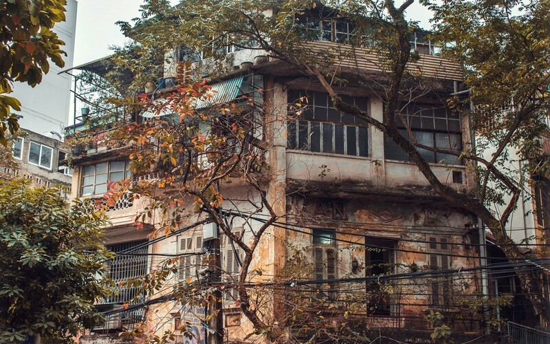
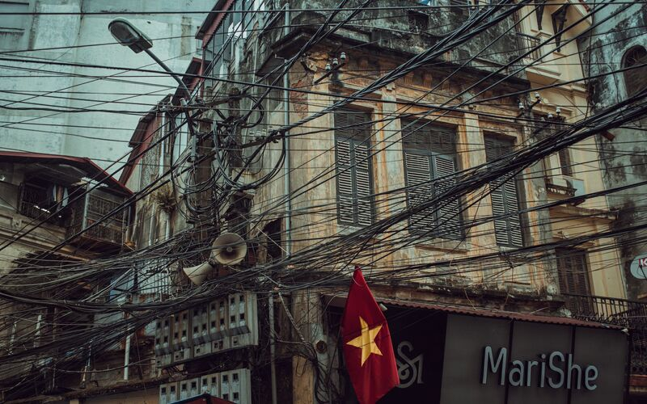
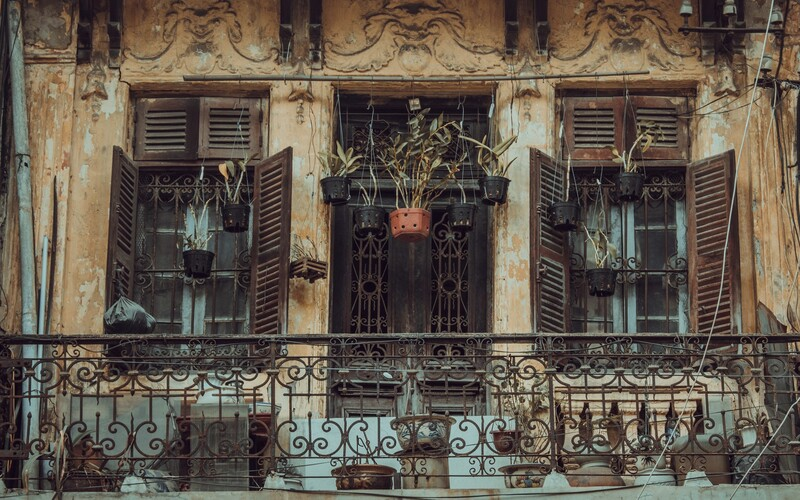
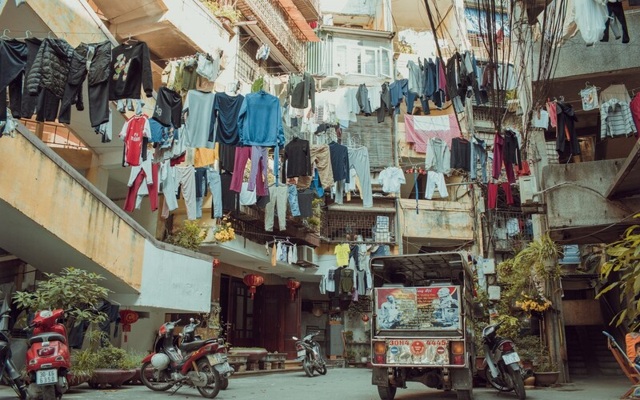
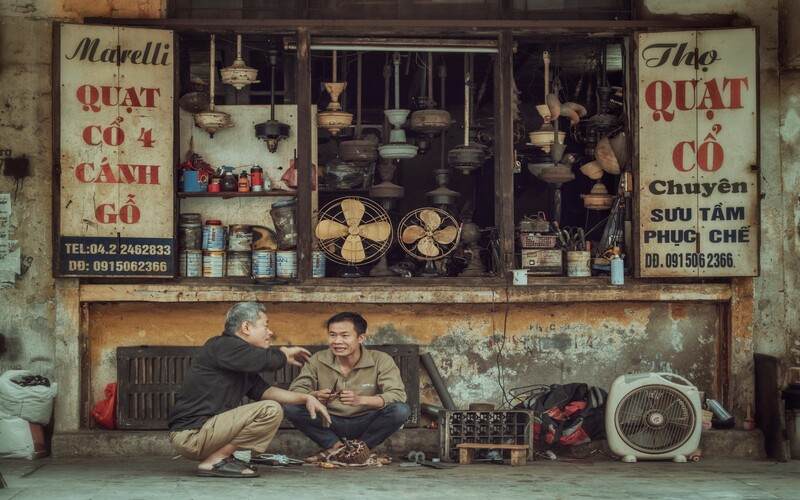
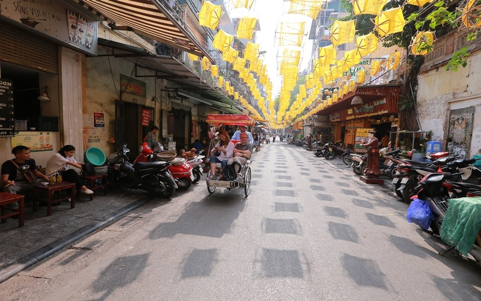

Cầu Thê Húc
Một trong những biểu tượng của Hà Nội ngàn năm văn hiến
Chùa Một Cột
Biểu tượng văn hoá ngàn năm văn hiến của Hà Nội

Chùa Trấn Quốc
Ngôi chùa cổ linh thiêng đẹp nhất Việt Nam
Lặng ngắm Hà Nội qua những khung hình cổ kính
Hà Nội thay da đổi thịt từng ngày. Những tòa cao ốc mọc lên như nấm, đồng nghĩa với việc những căn nhà cổ trở nên thưa dần. Ngôi nhà cũ kỹ với mảng tường vàng bong tróc, bám rêu nay chỉ còn thấy ở những khu phố lâu đời trên đất Hà thành.
Nhiều ngôi nhà sờn cũ gần trăm tuổi đã có dấu hiệu của sự thay thế, chắp vá. Một phần cổ kính của ô cửa sổ sơn xanh, tường vàng, kết hợp với những tấm lợp tôn đỏ hiện đại, xung quanh chằng chịt dây điện, tạo nên nét riêng cho diện mạo của các khu phố cũ giữa Hà Nội thời nay.
Nhiều căn nhà có từ thời Pháp thuộc vẫn lặng lẽ nhìn Hà Nội đổi thay mỗi ngày. Những ngôi nhà xưa kia là điểm nhấn của khu phố với mái ngói đỏ, tường vàng tươi, cửa sổ gỗ sơn xanh bóng... giờ đây bị bỏ trống không bóng người qua lại. Chỉ một vài người tiếc nuối vẻ đẹp vang bóng một thời mới tìm đến để ghi lại mấy bức hình trước khi những ngôi nhà cổ này bị thay thế bởi các công trình mới hiện điện đại hơn. Lang thang khắp ngóc ngách ở Hà Nội, tôi dừng lại trước những ô cửa của ngôi nhà cấp 4 cũ. Đang loay hoay chụp ảnh, một ông cụ gần đó tiến đến cười rằng: "Chụp đi cháu, kẻo sau này không còn để chụp nữa đâu". Những người từng gắn bó cùng mảnh đất kinh đô cả một đời cũng ngậm ngùi nhớ về nhiều ký ức đã qua.
Nét cổ kính, trầm mặc của Hà Nội trở thành nguồn cảm hứng sáng tác nghệ thuật cho nhiều nhiếp ảnh gia, họa sĩ, nhạc sĩ... Người ta chia sẻ trên mạng xã hội nhiều tấm ảnh về một Hà Nội xưa cũ, những bài hát, bài thơ về mảnh đất Hà thành cũng nhiều không kể hết. Địa điểm cổ kính trên các khu phố cổ còn là nơi check-in được giới trẻ đặc biệt yêu thích.
Nhiều người phàn nàn rằng Hà Nội chật chội, đông đúc, nhịp sống hối hả. Với tôi, Hà Nội ở một góc phố nhỏ nào đó vẫn hiện lên nét bình yên, giản dị, con người chan hòa, chậm rãi với nhau giữa những bộn bề cuộc sống.
Tôi không được trải nghiệm cuộc sống của thủ đô những năm tháng cũ, nhưng tôi luôn yêu những điều đã qua vẫn hiện diện ở thành phố này.
Lời giới thiệu
Hẳn bạn đã nghe rất nhiều về Hà Nội - Thủ đô hơn 1000 năm tuổi. Không chỉ nổi tiếng với lịch sử lâu đời, giàu bản sắc, văn hoá truyền thống dân tộc, vùng đất này còn được biết đến là một trong những địa điểm thu hút nhiều du khách trong và ngoài nước. Qua trang web này, chắc chắn bạn sẽ yêu nó ngay từ những thứ mà nó có, từ văn hoá, phong tục tập quán, con người, nhịp sống cho đến cảnh vật và cả nền ẩm thực hấp dẫn mà không nơi nào có được.
Hà Nội Xưa
Người Hà Nội vẫn tự hào về những dãy phố lâu đời, nơi gửi gắm bao hồi ức, hoài niệm xưa cũ, nét cổ kính Hà Nội vẫn vẹn nguyên giữa thành phố đang vươn mình thay đổi quá nhanh
Hà Nội Mới
Sau 64 năm giải phóng Thủ đô, Hà Nội nay đã và đang vươn mình trở thành một thành phố hiện đại bậc nhất khu vực và xứng đáng là trái tim của cả nước.
36 Phố Phường
Hà Nội 36 phố phường là cái tên đã được hình thành từ thời Lý Trần. Đó là khi các khu sinh hoạt dân cư buôn bán dần bắt đầu hình thành, dân cư từ khắp nơi tụ tập lại và trở thành khu vực sầm uất nhất kinh thành thời bấy giờ.
